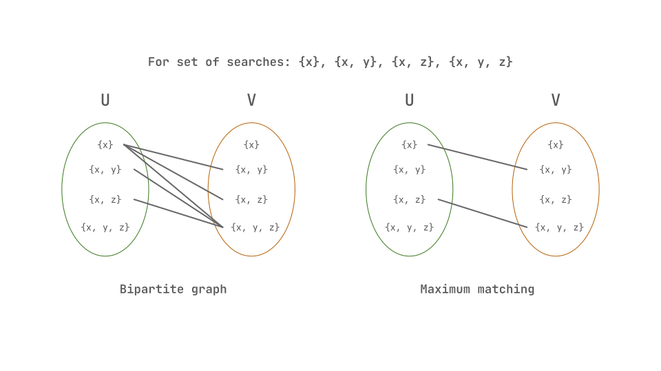
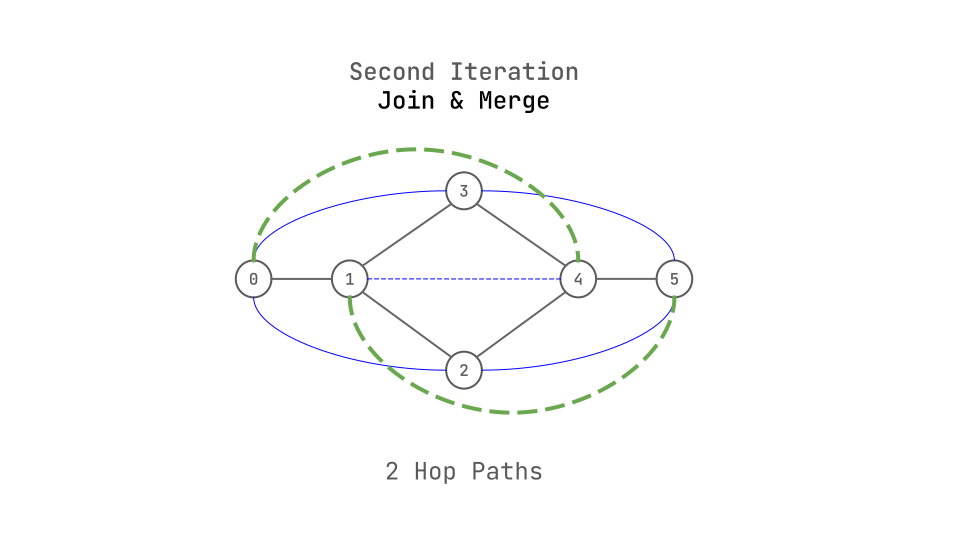

Introduction
Datalog rules are a bunch of relational queries, each involving of joins over multiple relations. Here is a simple example of a Datalog rule:
|
|
The above query does Transitive closure over a graph, where path and edge are relations. The query is saying, if there is a path from x to z and there is an edge from z to y, then there is a path from x to y. This query involves a join over path and edge relations. Larger programs can have 100’s of such queries, each involving joins over multiple relations.
For these queries to be performant, you need indexes to make the value look-ups faster and avoid linear scans of the tables.
Well, How do you go about creating the indexes?, Is there a general way that is optimal?. What considerations do you need to take into account when creating indexes?.
This is the paper, that sets up the Minimum Index Selection Problem. The goal of the paper is, given a set of searches that are performed over a relation, figure out the minimum number of indices possible, such that every search is covered by an Index.
How does a sample problem look like?
- Input
- A relation R, has n columns, of those 3 are being used in different searches,
x, y, z. - The input for the problem is the set of searches being used on a relation,
{x}, {x,y}, {x,z}, {x, y, z} - To enable, performant look-up of these searches, you need to create indexes on the relation for these columns. Naively, at most 4 indexes are needed as there are 4 searches.
- A relation R, has n columns, of those 3 are being used in different searches,
- Problem
- Can you get away with fewer indexes without any linear scans of the table?
- Observations/Note’s
- “For example, the index \( \ell = x \prec y \prec z \) covers three primitive searches: \( S_1 = \sigma_{x=v_1} \), \( S_2 = \sigma_{x=v'_1, y=v'_2} \), and \( S_3 = \sigma_{x=v''_1, y=v''_2, z=v''_3} \)”.
- You can share indexes among searches, if the searches share a common prefix. For example, if you have searches
{x}, {x,y}. You can create an index for \(x \prec y\) and use it for both searches. - Taking this a bit further, you can see,
{x}, {x, y}, {x, y, z}, can share one index, \(x \prec y \prec z \) andx,zneeds a separate index. Or another possibility isx,x,zandx,z,yshare an index, andx,ya separate index. - Here you can intuitively see that you can get away with fewer indexes than the number of searches, by just finding the longest common prefixes among the searches.
- Solution
- This finding the longest prefixes among the searches to cover all searches as to figure a minimum number of indexes is a simple definition of the Minimum Index Selection Problem(MISP).
- As the paper reveals, this problem can be modelled as Minimum Chain Cover Problem(MCCP), which can be solved in polynomial time.
- Hence, Our MISP too, can be solved in polynomial time.
- As does the paper, we will look at the problem and the solution in more detail in the following sections.
Details
Definitions
- Primitive Search : A primitive search is like a SQL select statement that return tuples which satisfy a condition. For example, a equality check on a column, \( \sigma_{x=v} \) is a primitive search.
- Index : An Index here refers to a clustered B-Tree index that covers a searach predicate. Index, \( \ell = x \prec y \prec z \) uses \( x \) followed by \( y \) followed by \( z \) as its key, and covers searches that share a common prefix with the index.
- Search Chain : “A sequence of \( k \) searches \(S_1, S_2, \ldots, S_k \) form a search chain if each search \( S_i \) is a proper subset of its immediate successor \( S_{i+1} \). As a result, all search in the same search chain can be covered by a single index.”
Content
Hopefully, I did a good job of explaining what, the problem we are trying to solve is and some intuition about how the paper looks to solve it.
Why not just create an index for each search?
- Well, you can, but that is super expensive both memory and compute, and you can do much better.
Why not just look through all the searches and figure the minimal set?
- Well, again you can, but this borders on not possible due to sheer number of possible combinations. The number of possible combinations is something like \( 2^{m!} \), where \( m \) is the number of columns used for searches over a relation.
- When you have \( m \) attributes involved, you have \( m! \) possible permutations of the attributes for an index. And then, out of the \( m! \) permutations, have to choose a minimal set of indexes that cover all searches, i.e., an index can be included in the set or not, and that leads to \( 2^{m!} \) possible combinations.
- The above is a simplification, Section 5.1 of the paper goes into more details.
What is MISP again?
- MISP is the Minimum Index Selection Problem, given a set of searches over a relation, need to figure out the minimum number of indexes to cover all searches.
- Take a set of searches \( \mathcal{S} \), and create a set of search chains \( \mathcal{C} \), such that every search in \( \mathcal{S} \) is covered by a search chain in \( \mathcal{C} \).
$$ \text{c-cover}_S(\mathcal{C}) = \forall S \in \mathcal{S} : \exists C \in \mathcal{C} : S \in C. $$ - Now, This looks like a Minimum Chain Cover Problem(MCCP), i.e., Given a partial order, find the minimum number of chains that cover all elements.
How do you solve MISP?
- We saw that MISP can be modelled as MCCP, and MCCP can be solved optimally in polynomial time by Dilworth’s Theorem.
- Dilworth’s Theorem states that “… in a finite partial order, the size of the maximum anti-chain is equal to the minimum number of chains needed to cover its elements.”
- Here, anti-chain is a subset of a poset,such that no two elements are related. And, a chain is a subset of a poset, that forms a total order.
- MCCP can be solved either via the maximum matching problem in bipartite graphs or via the maximum flow problem in networks.
- Here are the details,
- To compute a minimum chain cover for a set of searches, you create a bi-paritite graph, \( G_s = (U, V, E) \), where \(U\) and \(V\) are the set of searches and \( E \) is edge from \(U\) to \(V\), if the search \(u\) in \(U\) is a subset of the search \(v\) in \(V\).
- From the bi-partite graph, you have to compute a maximum matching, which is largest set of edges such that no two edges share a vertex.
- A matching is a subset of edges, such that no two edges share a vertex, or each vertex in \(U\) and \(V\) appears at most once.
- Once you have the maximum matching, you can create the search chains, by following the edges in the matching.
- The number of search chains is the minimum number of indexes needed to cover all searches.
How to compute a maximum matching?
- Maximum Matching can be computed using Hopcroft-Karp algorithm.
- At a super high level, there are three steps to the algorithm, and we will use the same running example as the paper does to explain.
$$ \mathcal{S} = \{x\}, \{x,y\}, \{x,z\}, \{x,y,z\} $$ - First step is create a bi-paritite graph, \( G_s = (U, V, E) \) from \( \mathcal{S} \).
 - Well, this is an image.
